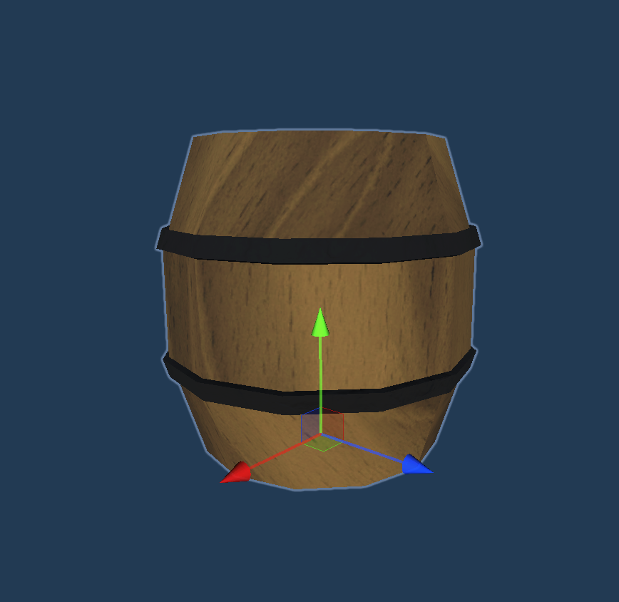
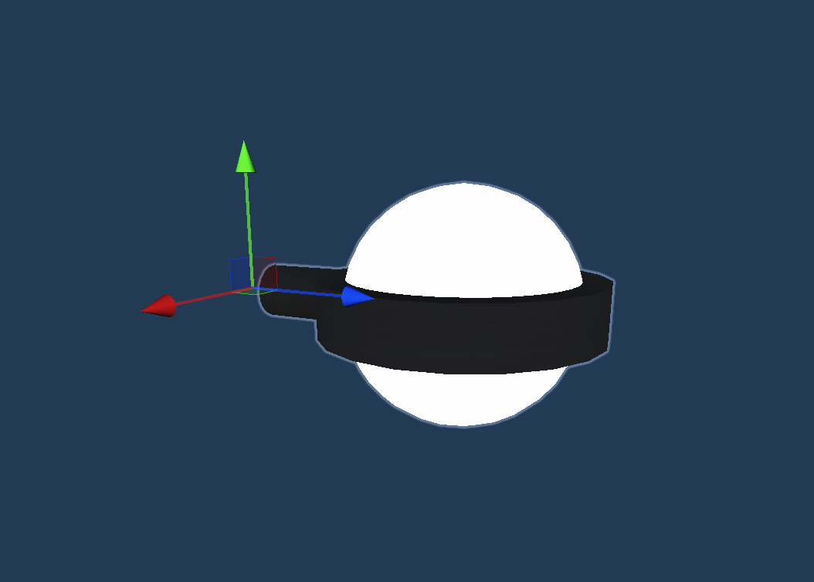
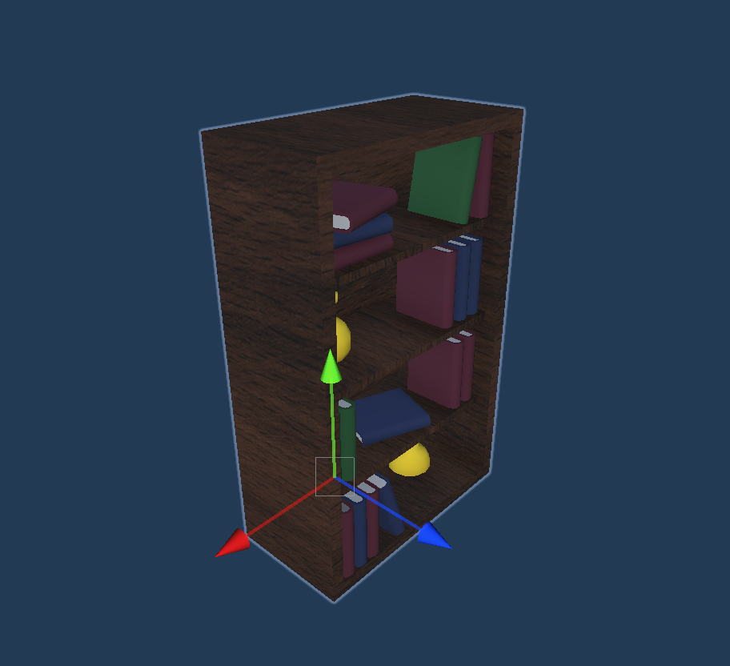

Prop Prefabs
Any prefab can be used as a prop. A prop prefab can be anything that you want procedurally placed throughout your map, whether on Prop Spots or Procedural Prop Spots.
Creating Prop Prefabs
A prop prefab doesn’t strictly require any components. A Collider is only required if you want to prevent overlap with the environment and other props. The pivot point of the root prefab is important to consider. When a prop is placed, the pivot point is aligned and oriented with the PropSpot or ProceduralPropSpot its being placed on. If you want your prop to be placed on the ground, you need to make sure that the pivot of the prop prefab is at the base of the object:

Notice the barrel’s pivot is centered on the ground. If you want it placed against a wall, the pivot should not be in the center of the object because when placed it would be intersecting the wall. The solution is to either ensure the pivot is behind the object, or use a Prop Anchor Override component.

Notice the light fixture’s pivot is at the point where it would be attached to a wall.

Notice the bookshelf’s pivot is at the base of its back side so that it can be placed against the wall on the ground.
Advanced Prop Components
These components are optional but very useful for controlling how and where prop prefabs get placed.